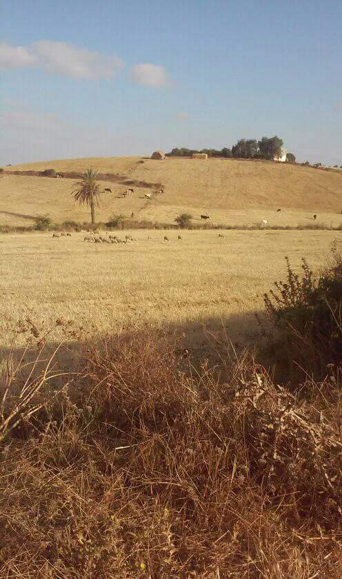

تقرير تقني: رحلة بناء مدونة احترافية متكاملة عبر بيئة Debian 13
في ظل التطور الرقمي المتسارع، لم تعد عملية تطوير المواقع محصورة على أجهزة الحاسوب المكتبية القوية. هذا المقال يستعرض تجربة واقعية قمت بها لبناء مدونة ويب متكاملة، تعتمد على معايير حديثة، وتم تنفيذ كافة مراحلها برمجياً عبر هاتف محمول يعمل ببيئة Debian 13.
1. إعداد بيئة العمل (The Environment)
بدأت الرحلة باختيار نظام Debian 13 كقاعدة انطلاق، لما يوفره من استقرار وأدوات برمجية قوية تحاكي سيرفرات الويب الحقيقية. تم إعداد محرر الأكواد والاعتماد على متصفح الهاتف لاختبار النتائج لحظياً عبر السيرفر المحلي.
2. الهيكلة وبناء الواجهة (Frontend)
تم تصميم واجهة المستخدم باستخدام لغات الويب الأساسية HTML5 لبناء الهيكل الإنشائي، و CSS3 لتطوير نمط بصري عصري يعتمد على نظام الشبكات (Grid System) لضمان استجابة الموقع مع كافة أحجام الشاشات.
3. دمج الأنظمة التفاعلية (Services)
لجعل المدونة حية، تم دمج نظام التعليقات Disqus لتوفير منصة نقاش للزوار، وربط صفحة الاتصال بخدمة Formspree لضمان وصول الرسائل مباشرة إلى البريد الإلكتروني بحماية عالية.
الخلاصة: هذا المشروع هو إثبات على أن الإرادة والتقنيات مفتوحة المصدر يمكنها تحويل الهاتف إلى منصة إبداع احترافية.